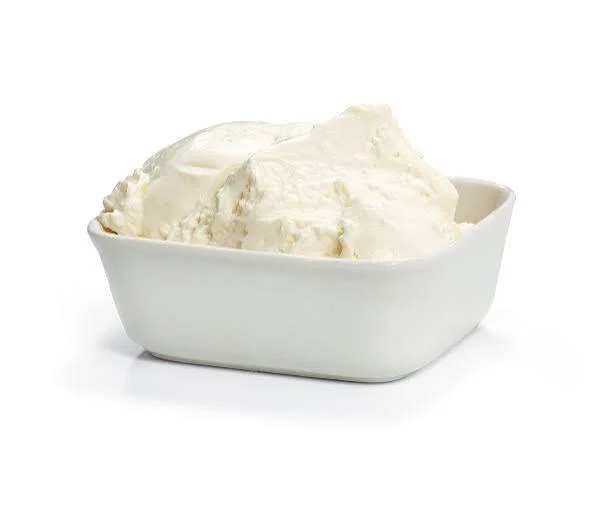
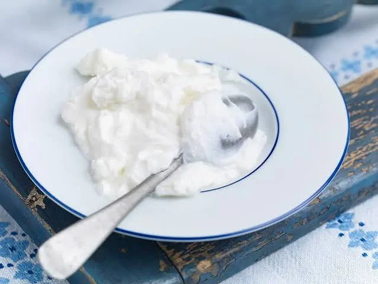
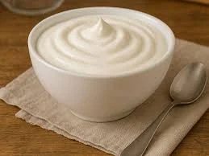

Schicht 06:00 VEB Quarkkombinat Südost
Montagemagerquark
Nu gugge ma – Eiweiß muss nei.
Kein Firlefanz. Kein Chichi. Nur ehrlicher Quark für Leute, die schon vorm Frühstück mehr stemmen als andere den ganzen Tach.
Quark schaufelnAM WERK 0,2 % Fett · 100 % Wille
AN'N QUARK Löffeln. Schaffen. Wiederhol'n.
MÖRTEL Hält länger als de Fassade.
STATT GEJAMMER Beschluss der Frühstückskommission.
NATUR Dunkel draußen. Hell im Becher.
◆ 60 Gramm Eiweiß◆ Kein Gedöns◆ Löffelfest seit '84◆ Schichttauglich
De Quark / Zusammensetzung
Weiß wie de Wand.
Stärker als Beton.
Montagemagerquark is keene Lifestyle-Entscheidung. Das is Baumaterial für den Körper.
Gerührt mit Geduld, abgefüllt mit Nachdruck und geprüft von Männern, die „Pause“ nur vom Hörensagen kennen. Schmeckt pur, herzhaft oder so, wie de Oma das früher gemacht hat: mit ordentlich Zeuch drinne.
- Baustoffklasse
- MQ–500
- Konsistenz
- tragfähig
- Einsatz
- Früh / Spät / Nacht

Produktnorm / Drei Einsatzlagen
De Brigade
im Kühlregal.
Drei Sorten, eine Dienstanweisung: Deckel ab, Löffel nei, Schicht retten.
0,2 %
Fett MQ
500
Fett MQ
500
Los-Nr. 01 · 500 g
Frühschicht Natur
Pur. Pünktlich. Planerfüllt.
ExtraWürze MQ
K
Los-Nr. 02 · 500 g
Schichtleiter Kräuter
Bestimmt, was aufs Brot kommt.
Leichtsüß MQ
N
Los-Nr. 03 · 500 g
Nachtschicht Vanille
Macht die Dunkelstunden heller.Rezebde / Schichtversorgung
Drei Schippen
für de Brotdose.
Nachbausicher, kleckerarm und ohne Zutaten, die man erst im Westpaket suchen muss.
01 / Werksküche
Bautz'ner Bolzen
Quark, Senf, Gurke, Zwiebel. Rührt sich schwer, arbeitet sich leicht.
Du brauchst: 250 g Quark, 1 EL Senf, ½ Gewürzgurke, Zwiebel, Salz.
Brigade-Favorit
02 / Brigade
Schicht im Schacht
Quark auf Brot, Ei druff, Paprika hinterher. Nu is aber ooch ma gut.
Du brauchst: 250 g Quark, 2 Eier, Paprika, Graubrot, Pfeffer.
03 / Nachtschicht
Apfel-Abriss
Quark, Apfel, Zimt und Hafer. Süß genug, aber nich gleich albern.
Du brauchst: 250 g Quark, 1 Apfel, Haferflocken, Zimt, Schluck Wasser.
Nährwärde / je 500-g-Eimer*
Zahlen, die
mit anpacken.
Eiweiß0g
Energie0kcal
Fett0g
Kohlehydrate0g
Ausreden0Stück
*Fiktive Beispielwerte für dieses Gestaltungskonzept. Nu nich gleich die Waage eichen.
Für de Malocher / Losungen
Erst de Arbeit.
Dann noch mehr Quark.
Wandtattoos kannste woanders kaufen. Hier gibt's Parolen mit ordentlich Unterarm.
„Wo gehobelt wird,
wird Quark gelöffelt.“
Muskeln kommen nich vom
Rumdibbern.
Mach hinne.
Der Quark wird warm.
Geprüfte
Schaufelklasse
A+
Schaufelklasse
A+
FRÜHSCHICHT
05:30SPÄTSCHICHT
14:00NACHTSCHICHT
22:00Neu Quarkomat 84
Was muss
heute nei?
Stell de Lage ein. Der Zentralrechner errechnet deine amtliche Schichtversorgung – fast ohne Lochkartenstau.
Quark des Tages / Aushang Nr. 17
Heute im Betriebsfunk:
„Wer den Löffel abgibt, hat nich richtich angefangen.“
Abonnieren? Nee.
Komm morjen wieder.
Die Losung wechselt wie de Schicht. Ganz ohne Newsletter, Datenkrake oder Chef im Nacken.
--:--WERKSZEIT